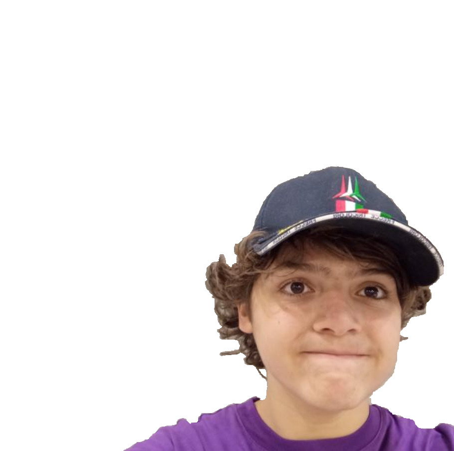

ACCESSO RISERVATO
INSERISCI PASSWORD
_
CONFERMA ▶
✖ PASSWORD ERRATA

Pocchiaciclopedia
L'enciclopedia libera (quasi)
🔍
← Indietro
Navigazione
Pagina principale
Progetti collegati
🌐 Vai all'Enciclopocchiedia
Admin
⌨️ Modalità admin